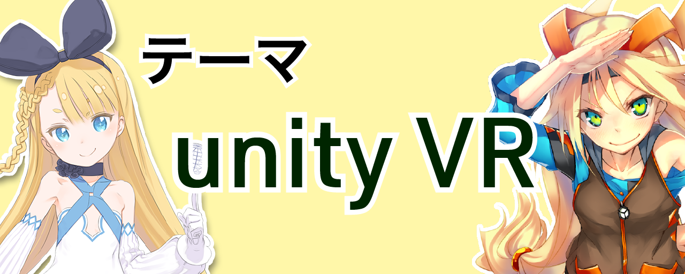

ANYハッカソンとは、会津大学、新潟大学、山形大学の3大学が合同で行うハッカソンです。
第一回である今回のテーマは……
 左：ニコニコ立体ちゃん (https://3d.nicovideo.jp/alicia/)です!
各大学が位置する会津・新潟・米沢（工学部キャンパス）は、それぞれ1時間半で行き来が可能ですが、これまで学生同士の交流はあまりありませんでした。
しかし、最近のVR技術の発展により、VR空間での学生同士の交流が増えつつあります。
今回は、この流れをさらに加速させるべく、それぞれの大学にあるVRサークルが主催となり、3大学合同でハッカソンを企画しました！
参加費は無料です。また、現在スポンサーになってくださる企業・個人の方を募集しており、学生への交通費・宿泊費の補助に充てたいと考えております。
参加者の所属・スキルなどは問いません。大学生、専門学生はもちろん、社会人の方も歓迎です。
ハッカソン……「ハック」と「マラソン」をかけ合わせた造語で、週末などの数日間を利用して、新しいサービスやプロダクトを作るイベントのこと。2019年2月16日(土)、17日(日)
会津大学 M6教室
教室までの360度案内はこちら◆ 2/16(土) 9:30〜9:50 受付 10時 イベント開始 10時〜10:15 オープニングトーク 各大学のVR部の活動紹介（10分×3大学） 10:45〜 Unityの中の人が伝えるUnityの最新動向 （ユニティ・テクノロジーズ・ジャパン, 講演者は調整中です） 12時〜13時 ランチ&交流タイム 13時〜14時 チームビルディング 14時〜17時 開発 17時〜18時 メンタリングタイム 18時〜 自由時間（開発・交流・食事など） 〜24時 会場施錠 ◆ 2/17(日) 9時 教室オープン 9:15〜9:30 中間報告(1チーム 1分) 9:30〜15時 開発 15時 最終プレゼン 16時 講評・表彰（審査員は調整中です） 16:20〜16:45 試遊会 17時 解散
※応募要件はありませんが、イベント当日をより有意義なものにするため、Unityの基礎を理解しておくと良いでしょう。
教材は、分かりやすい映像で無料で学習ができる、「ドットインストール」のUnity入門 (https://dotinstall.com/lessons/basic_unity_v2) がオススメです。
最新情報はTwitter (@any_hackathon) をチェック！